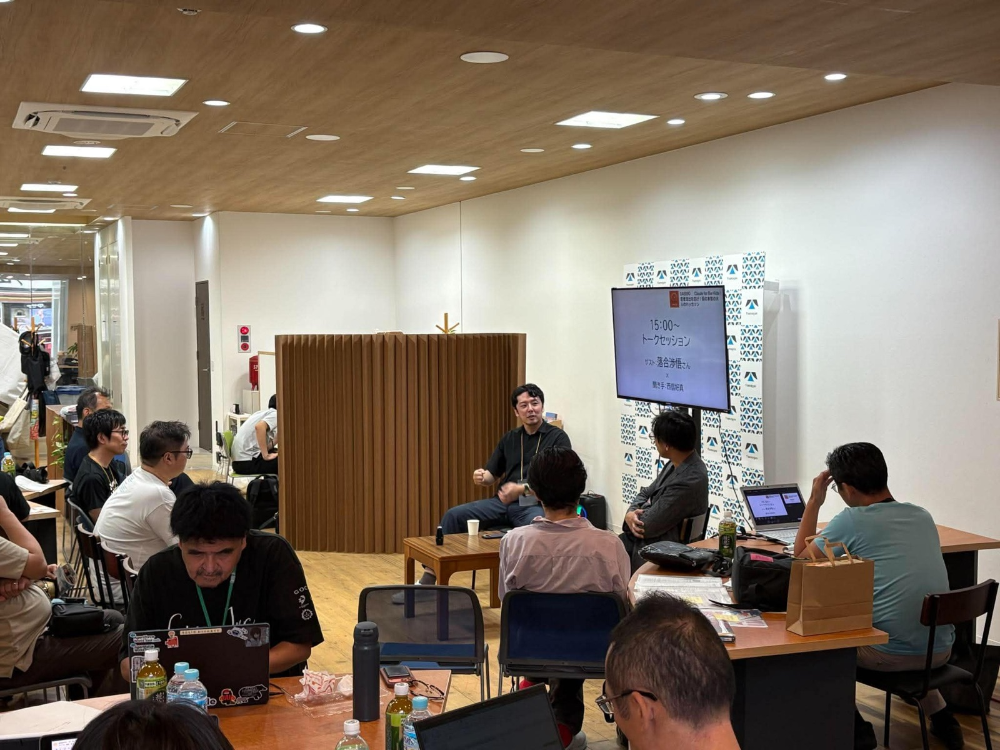

話は、いちばん実用的なところから始まりました。ゼロから場を作るなら、古民家の部屋には手を入れない。直すのは水回りだけ。キッチンで約10万円、トイレを足しても合計50万円以下。それだけでその古民家は「キャンプ場」として機能し始めます。テントを並べて10人泊め、催しをやる。広い部屋の管理を毎日続けるのは無理でも、水回りだけなら維持できる——という計算です。
「西海や西彼のあたりの古民家なら、調べればゼロ円でもらえる物件があるはずなんですよ。意外とみんな、個人で場づくりできるはずなんです」
ハッカソンの午後に行われた、落合渉悟さんのトークセッションのダイジェスト記事です。人口流出とは正反対に、日本中からエンジニアや哲学者が集まってくる佐賀県嬉野市塩田。約60分の対話を、用語解説つきで再構成しました。
ブロックチェーン・イーサリアム関連技術の研究者・エンジニア。町内会やマンション管理組合のような身近な自治を、リーダーなしでスマホから回すアプリ「Alga（アルガ）」の開発者。著書に『僕たちはメタ国家で暮らすことに決めた』（2022年）。現在は佐賀県嬉野市塩田に住み、古民家5軒を直しながら、人が集まる場を作っている。このハッカソンでは審査員も務めた。

話は、いちばん実用的なところから始まりました。ゼロから場を作るなら、古民家の部屋には手を入れない。直すのは水回りだけ。キッチンで約10万円、トイレを足しても合計50万円以下。それだけでその古民家は「キャンプ場」として機能し始めます。テントを並べて10人泊め、催しをやる。広い部屋の管理を毎日続けるのは無理でも、水回りだけなら維持できる——という計算です。
「西海や西彼のあたりの古民家なら、調べればゼロ円でもらえる物件があるはずなんですよ。意外とみんな、個人で場づくりできるはずなんです」
空き家バンク自治体が空き家の情報を集めて、借りたい人・買いたい人につなぐ制度。落合さんの物件探しもここから始まった。
落合さんは、電通のシンクタンク・電通総研のチームにブロックチェーンを教えてきました。その縁で「西九州で一緒に教育をやろう」という話が出るたびに、突き当たる事実があるといいます。この地域には理系の大学がほとんどない。だから鍵は佐世保高専になる。
「西九州全体に理科系の人材育成のくさびを打とうとすると、結局、佐世保の話になるんです。武雄のあたりまでは全部佐世保に頼ることになる。県北と佐賀西部で、広域都市圏というコンセンサスをみんなで作れたらいい」
高専（高等専門学校）中学卒業後の5年間で技術者を育てる学校。佐世保高専は地域で数少ない理系人材の育成拠点。
かつての塩田に人を呼ぶ核は「ブロックチェーン、教えます」でした。それがAIの登場で崩れます。技術は、AIに聞けば分かってしまう。ここからの方向転換が、このトークの背骨でした。
「ブロックチェーンの本質は、思想を実装する機械なんです。なのに思想を持たずに作ると、ネズミ講みたいになってしまう」
長年教えてきて分かったのは「技術はみんな覚える。でも、いいものはあまり作れない」ということ。足りないのは技術ではなく、何のために作るかという思想の側でした。それなら教えるべきは技術ではなく「思想の作り方」ではないか——。その受け皿として選んだのが、本屋という形です。
ブロックチェーンインターネット上でお金や記録を、銀行のような管理者なしで安全にやり取りする技術。暗号資産（ビットコインなど）の土台。
思想（イデオロギー）ここでは「何のために・どんなルールで社会や仕組みを動かすか」という考え方のこと。
その本屋の名は「Counter Culture Books」。何を集めるのか。落合さんは、西海市の無人島・田島で過ごした一晩の話をしました。電気なし、電波なし、光なし。船で5分の距離で、約8,000円のアクティビティとして体験できます。
「光のない夜って、すごいんですよ。上と下が分からなくなる。崖があるかも分からないから、一歩が踏み出せない。人間は昔、当たり前にこの感覚の中で生きていたはずなんです」
愛読書『失われた夜の歴史』を引きながら、続けます。この「昔の夜」の身体感覚は、AIが学習した文章の中にはうっすらとしか入っていない。つまり、人間がもともと持っていたのに忘れられがちな感覚が、世界にはたくさん散らばっている。それを本で集める。書棚には、ローカルAI（手元のパソコンで動くAI）が本ごとの注釈を出す仕組みも検討中。無料で図書館のように使えるゾーンと課金ゾーンを分け、30人ほど呼んで本屋を中心に過ごしてもらい、夜は落合さんの古民家に泊める——そうした構想を話してくれました。
物件は塩田津の伝統的建造物群保存地区にある237平米。もとは用途「倉庫」で空き家バンクに出ていた、電気の配線図がなくゼロからやり直すと数百万円という難物件でした。そこに「直した分は全部オーナーの資産になっていいので、10年間、家賃を安くしてください」という交渉を行い、その条件で借りられることに。そうした交渉を支えたのは、移住後の5年間、地元の草刈りや行事に出続けた地域での信頼の積み上げの結果でした。オープンは2026年10月末の予定です。
伝統的建造物群保存地区昔ながらの街並みを国の制度で保存している地区。塩田津は江戸期の商家が残る川港の町。
ローカルAIクラウドではなく、手元のコンピューターの中で動かすAI。データを外に出さずに使える。
話は突然、ガチョウに飛びます。落合さんは5年間の畑作りを経て、いまはガチョウ11羽を飼っています。ガチョウは雑草を食べて育つので、飼料を買う必要がない。年に約40個の卵を産み、4割が孵り、残りは食べる。肉は赤身、皮はコラーゲン質、脂はフランス料理のグースオイル、羽毛は高級ダウンの素材。捨てるところがありません。
「ビットコインをずっと見てきて思うんです。人間は頭の中に『無限』を持っているけど、現実の世界に無限はほぼない。でもガチョウは無限なんですよ。太陽のエネルギーを挟んだ、永久機関みたいなものです」
ガチョウは、戦略の話に繋がりました。IoT（モノをインターネットにつなぐ技術）の自作が簡単になり、イノシシ罠の自動検知装置は、市販品なら端末2万円＋月額数千円のところを、自作なら1個300円の部品で1km先まで通信できる。自動の水やりも作れる。つまりAIとIoTが進むほど「自然から収穫できる量」が増えていく。だとすれば、コンクリートより土の多い場所のほうが有利になる——。佐賀の白石町は、落合さんの計算で食料自給率約1,300%だそうです。
IoTセンサーや家電などの「モノ」をインターネットにつないで、測ったり動かしたりする技術。
なぜ田舎なのか。出発点は、ブロックチェーンは稼ぎにくいという制限でした。なぜならオープンソース（プログラムの設計図を全世界に公開する文化）の世界なので、発明したそばから知識は公開されてしまう。それなら、余裕——「暇」——を持てる側が強い。
固定費の低い田舎で暇を確保し、手の内は明かさず、ここぞという時にだけ社会に出す。都会では固定費が高すぎて、この戦い方はできない。手の内を全部さらして、勝負を急ぐしかなくなる。
「塩田の拠点は、暇でいても咎められない土地にしてあるんです。ブロックチェーンの指輪を作っていた仲間が、暇すぎて湿板写真——大正時代の、ガラスに感光させる写真技術——を始めました。現代でも、暇があればそういうユニークな動きが始まるんです」
オープンソースプログラムの設計図（ソースコード）を無料で全世界に公開し、誰でも使い、改良できるようにする文化。
湿板写真ガラス板に薬品を塗って撮る19世紀の写真技法。大きな木製カメラと暗室が要る。
自宅で動いている自作AIシステム「Luci（ルーシー）」についての話も。3台のパソコンでClaudeをはじめ複数のAPIを走らせ、落合さんとのやり取りをすべて「長期記憶」として保存。さらに、専門領域で役割分担をされたそれぞれのAIが、自律的に整理や開発を進めていきます。
「僕が一生で書けるプログラムの量には、限界がある。その上を行くには、AIが勝手に作ってきたものを、僕が『いらない』と捨てて、教えていくしかないんです」
上がってきた提案を落合さんが却下すると、AIは「これは気に入らないのか」と学習する。AIは狭く深くテーマに集中し、人間は引いた目線で全体を見る。品質面でも工夫があり、プログラムの「ありえない分岐」を仕組みで先に消してテストの数を減らし、上がってきた1,300件の自動テストを、さらに日本語に変換して約800ページの仕様書として自動生成する——実装と説明が常に一致した状態を保っています。
「これ、いずれAnthropicが標準機能で出してくるはずなんですよ。長期記憶の上手な管理ツール。その先行実験を勝手にやっている感じです」
AIエージェント指示を待つだけでなく、自分で判断しながら作業を進めるAIの使い方。
長期記憶AIとの会話や情報を保存しておき、後のやり取りでAIが参照できるようにした記録。
終盤、会場から質問が出ました。「ITが得意な人はいい。でも自治体の規模で考えたら、それ以外の人の仕事はどう生むのか」。落合さんの答えは、自著のテーマである「自治」から始まりました。自治を考えれば考えるほど、産業と切り離せない。産業のない場所に、自治は存在しにくい。だから若者の流出を語るとき、産業の話は避けられない。
いま勉強しているのは、電気・半導体・ロボットといった製造工場の誘致です。中国・深圳にも視察に行った。工業用水には10億円以上の投資が要り、渇水すれば工場が止まる。電気は絶対に止まらない冗長化が要る。嬉野市の企画課と話すと「物流拠点なら可能性がある」というリアクションになる——。
「ごくごく当たり前の結論なんですけど、仕事をいかに残すかが大事。僕は自分のできる力の中で、最後は工場を呼べるようになりたいと思っています」
半導体スマホやパソコン、車の頭脳になる電子部品。工場誘致は地域経済の一大テーマ（熊本のTSMC工場が有名）。
冗長化故障や停電が起きても止まらないよう、予備の系統を二重三重に持たせること。
人が集まる町の共通項として、香川県三豊市の話が出ました。プロジェクトデザイナーの古田秘馬さんが、讃岐うどん作りを体験しないと泊まれない宿「UDON HOUSE」から始めて、資金調達の手法を地元の若者たちに教え、多くの会社が生まれた。1日2回しか陸路がつながらない島には、地場の経営者たちの出資とクラウドファンディング（ネットで支援者から小口の資金を集める仕組み）でホテルを建てた。
「考えられないくらいのレバレッジ（てこ）をかけて、止まったら死ぬ、という走り方です。さすがに僕には真似できない。でも、一人がマジで止まらずに頑張り続けるのは、町が変わる必須条件だと思います」
クラウドファンディングインターネットで多数の支援者から少しずつ資金を集める仕組み。
レバレッジてこの原理。少ない元手に借入や支援を重ねて、大きな勝負をすること。
最後に落合さんは、社会学者テンニースの古典的な区分を持ち出しました。地縁や人のつながりで動く「ゲマインシャフト（共同体）」と、お金とサービスで動く「ゲゼルシャフト（利益社会）」。都会は後者、田舎は前者。佐世保はちょうど混ざった中間にある。だからこそ、地元のつながりという資産がまだ使える。若者が出ていくのは、そのつながりが若者に根付いていないから——という見立てです。
「結局は、地元に対する熱が、すべての始まりです。熱がないと、とんでもないレバレッジをかけることも、半導体工場を呼ぶぞという話も、始まらない」
落合さん自身、奥様の親族が佐世保にいて、塩田から佐世保までは車で40分。「僕も西九州というゲマインシャフトに強くコミットしてしまったので、もう引けないんですよ」。トークのあと、落合さんは審査員として残り、6チームの成果発表に立ち会っていただきました。
本ページは当日の録音をもとに、主催者が対話を再構成したものです。引用はすべて発言の要旨であり、一言一句の記録ではありません。第三者に関わる話題・固有名詞は一部省略しています。